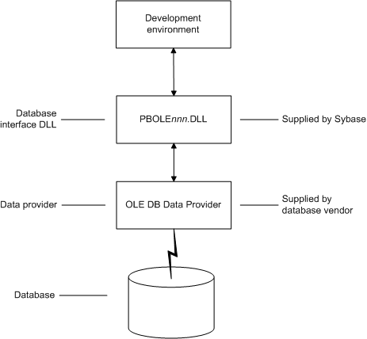

You can access a wide variety of data through OLE DB data providers in PowerBuilder. This section describes what you need to know to use OLE DB connections to access your data in PowerBuilder.
 Supported OLE DB data providers For a complete list of the OLE DB data providers supplied
with PowerBuilder and the data they access, see "Supported
Database Interfaces" in online Help.
Supported OLE DB data providers For a complete list of the OLE DB data providers supplied
with PowerBuilder and the data they access, see "Supported
Database Interfaces" in online Help.
OLE DB is a standard application programming interface (API) developed by Microsoft. It is a component of Microsoft's Data Access Components software. OLE DB allows an application to access a variety of data for which OLE DB data providers exist. It provides an application with uniform access to data stored in diverse formats, such as indexed-sequential files like Btrieve, personal databases like Paradox, productivity tools such as spreadsheets and electronic mail, and SQL-based DBMSs.
The OLE DB interface supports direct connections to SQL-based databases.
Applications like PowerBuilder that provide an OLE DB interface can access data for which an OLE DB data provider exists. An OLE DB data provider is a dynamic link library (DLL) that implements OLE DB function calls to access a particular data source.
The PowerBuilder OLE DB interface can connect to any OLE DB data provider that supports the OLE DB object interfaces listed in Table 4-1. An OLE DB data provider must support these interfaces in order to adhere to the Microsoft OLE DB 2.0 specification.
In addition to the required OLE DB interfaces, PowerBuilder also uses the OLE DB interfaces listed in Table 4-2 to provide further functionality.
Using the OLE DB interface, PowerBuilder can connect, save, and retrieve data in both ANSI/DBCS and Unicode databases but does not convert data between Unicode and ANSI/DBCS. When character data or command text is sent to the database, PowerBuilder sends a Unicode string. The data provider must guarantee that the data is saved as Unicode data correctly. When PowerBuilder retrieves character data, it assumes the data is Unicode.
A Unicode database is a database whose character set is set to a Unicode format, such as UTF-8, UTF-16, UCS-2, or UCS-4. All data must be in Unicode format, and any data saved to the database must be converted to Unicode data implicitly or explicitly.
A database that uses ANSI (or DBCS) as its character set might use special datatypes to store Unicode data. Columns with these datatypes can store only Unicode data. Any data saved into such a column must be converted to Unicode explicitly. This conversion must be handled by the database server or client.
When you access an OLE DB data provider in PowerBuilder, your connection goes through several layers before reaching the data provider. It is important to understand that each layer represents a separate component of the connection, and that each component might come from a different vendor.
Because OLE DB is a standard API, PowerBuilder uses the same interface to access every OLE DB data provider. As long as an OLE DB data provider supports the object interfaces required by PowerBuilder, PowerBuilder can access it through the OLE DB interface.
Figure 4-1 shows the general components of a OLE DB connection.

There are two ways you can obtain OLE DB data providers for use with PowerBuilder:
The OLE DB interface uses a DLL named PBOLE105.DLL to access a database through an OLE DB data provider.
 Required OLE DB version To use the OLE DB interface to access an OLE DB database,
you must connect through an OLE DB data provider that supports OLE
DB version 2.0 or later. For information on OLE DB specifications,
see Microsoft's Universal Data Access Web site
.
Required OLE DB version To use the OLE DB interface to access an OLE DB database,
you must connect through an OLE DB data provider that supports OLE
DB version 2.0 or later. For information on OLE DB specifications,
see Microsoft's Universal Data Access Web site
.